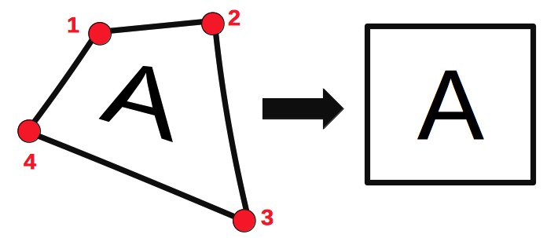
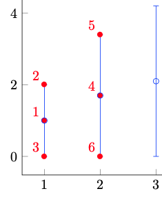
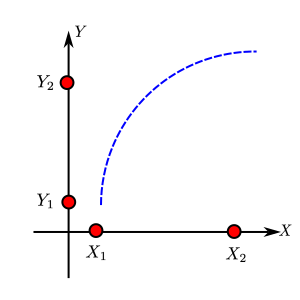
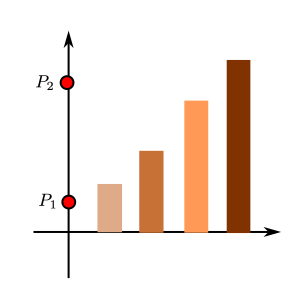
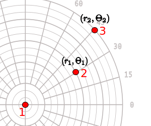
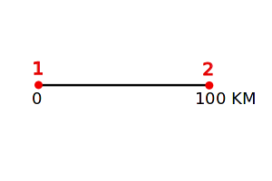
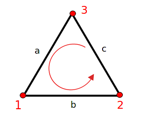
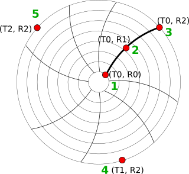

Processing...
Select image files or PDF documents
You can also drag and drop or paste images
|
Magnification: |
Times |
|
Crosshair Color: |
|
Load a Javascript file to further extend the capabilities of WebPlotDigitizer.
For examples, visit the WebPlotDigitizer repository.
|
Dataset: Variables:
*Plotly is a secure data analysis and graphing site with data sharing and access controls. Visit http://plot.ly for details. |
Sort Sort by: Order: Format Date Formatting: Number Formatting: Digits: Column Separator: |
WebPlotDigitizer 5.3
Copyright 2025 Automeris LLC, California, USA <plots@automeris.io>
Licenses:
Export a JSON file containing the axes calibrations, digitized data and measurements. This JSON file can be loaded to resume work at a later time. You can also download a combined 'project file' which includes this JSON and also the image in a single TAR file.
Project name: .json/.tar
Load a previously exported JSON or project file (.tar)
(Note: This will clear any unsaved data in the current plot.)
JSON/Project File:
Click to select a data point. The following keys can then be used to adjust the position:
| Cursor (Arrows) - | Move up/down/right/left |
| Shift + Cursor - | Faster rate of movement |
| Q - | Select next point |
| W - | Select previous point |
| Del/Backspace - | Delete point |
| E - | Edit label (Bar Chart) |
| R - |
Override value (When adjusting
non-Bar Chart points |
Label:

Click on four corners of the region to be transformed as shown.
Do you wish to tweak existing axes calibration or select a new axes type?
Export data from all datasets
Name:
Count:
Name:
Name:
Dimensions: pixels
Pages: pages
Relabel the current page number with an alphanumeric string. Optionally, relabel all page numbers in the image based on the current page (only supports integer values).
New page label:
|
Point groups are groups of related data points such as standard error or confidence intervals. To define a point group, enter a name in the text input below. Create additional point groups as necessary. E.g. Assume we have 3 point groups defined: Median, Standard error +1, and Standard error -1. Points would be entered in the order shown in the image to the right. For each set of points, the median value would first be recorded, then the standard error +1, and finally the standard error -1. The process would repeat for the next set of points. |
 |
| Group 0: |

Click four known points on the axes in the order shown in red. Two on the X axis (X1, X2) and two on the Y axis (Y1, Y2).

Click on two known points (P1, P2) on the continuous axes along the bars

Click on the center, followed by two known points.

Click on the two ends of the scale bar on the map.

Click on the three corners in the order shown above.
Click 'Calibrate' to set up a 1:1 mapping from image pixels to data

Click on five points on the chart axes as shown:
AI assist is an experimental feature that uses state-of-the-art multimodal AI models on your image to auto detect axes information and datasets. This feature is under active development and more capabilities will be added soon.
Click run to attempt auto-generating Axes and Datasets for your image.
Quota used:
Specify X values for data extraction, for example
[1, 2, 3]